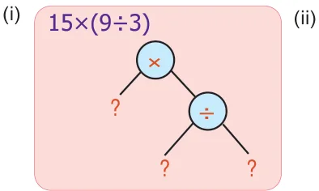
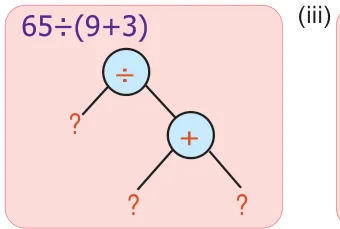
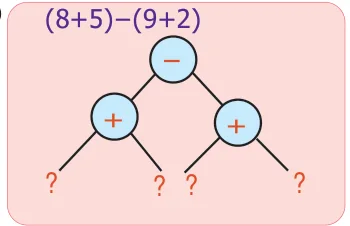
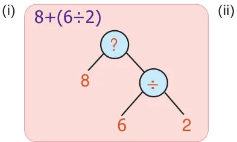
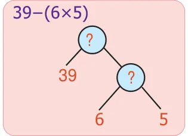
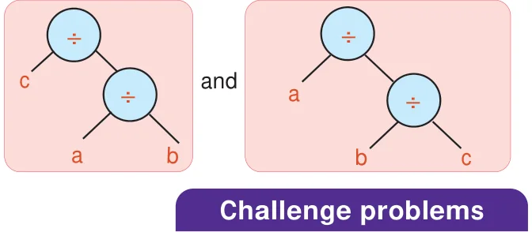

<!DOCTYPE html>
<html lang="en">
<head>
<meta charset="UTF-8">
<meta name="viewport" content="width=device-width,initial-scale=1">
<title>Exercise 5.2; Miscellaneous practice problems — Information Processing</title>
<meta name="description" content="Class 6 Mathematics · Term 2 · Information Processing · Exercise 5.2; Miscellaneous practice problems">
<link rel="icon" href="data:image/svg+xml,<svg xmlns='http://www.w3.org/2000/svg' viewBox='0 0 100 100'><text y='.9em' font-size='90'>📘</text></svg>">
<link rel="stylesheet" href="../../../assets/book.css">
<link rel="stylesheet" href="https://cdn.jsdelivr.net/npm/katex@0.16.11/dist/katex.min.css" crossorigin="anonymous">
</head>
<body>
<header class="topbar">
<div class="topbar-in">
  <div class="crumb">
    <span class="c1"><a href="../../../index.html">Library</a> · <a href="../../index.html">Class 6 Mathematics · Term 2</a></span>
    <span class="c2">Information Processing · Exercise 5.2; Miscellaneous practice problems</span>
  </div>
  <a class="tb-btn" data-nav="prev" href="../../05-information-processing/04-exercise-5.1/index.html" title="Exercise 5.1">←</a>
  <details class="drawer"><summary class="tb-btn" title="Sections in this chapter">☰</summary>
<div class="drawer-panel"><div class="dh">Information Processing</div><a href="../01-introduction-5.1/index.html">5.1 Introduction</a><a href="../02-conversion-of-tree-diagrams-into-numerical-expressions-5.2/index.html">5.2 Conversion of Tree Diagrams into Numerical Expressions</a><a href="../03-conversion-of-algebraic-expressions-into-tree-diagrams-5.3/index.html">5.3 Conversion of Algebraic Expressions into Tree Diagrams</a><a href="../04-exercise-5.1/index.html">Exercise 5.1</a><a href="../05-exercise-5.2/index.html" aria-current="page">Exercise 5.2; Miscellaneous practice problems</a></div></details>
  <a class="tb-btn" data-nav="next" href="../../90-appendix/00-front-matter/index.html" title="Front Matter">→</a>
  <button class="tb-btn" data-theme-toggle title="Toggle light / dark" aria-label="Toggle light or dark theme">◐</button>
</div>
<div class="progress"><span style="width:93.6%"></span></div>
</header>
<main class="wrap">
<div class="sec-head">
  <p class="eyebrow"><a href="../index.html">Chapter 5 · Information Processing</a></p>
  <h1>Exercise 5.2; Miscellaneous practice problems</h1>
  <p class="sec-meta">Textbook pages 10 · 7 figures</p>
</div>
<article class="prose">
<h2 class="callout-h" id="s-exercise-5-2">Exercise 5.2</h2>
<figure class="fig"></figure>
<ul class="qlist">
<li><span class="mk">1.</span><span class="lt">Write the missing numbers in the trees.</span></li>
</ul>
<figure class="fig"></figure>
<figure class="fig"></figure>
<figure class="fig side-fig"></figure>
<ul class="qlist">
<li><span class="mk">2.</span><span class="lt">Write the missing operations in the trees.</span></li>
</ul>
<figure class="fig"></figure>
<figure class="fig"></figure>
<ul class="qlist">
<li><span class="mk">3.</span><span class="lt">Convert the following tree diagram into an algebraic expression.</span></li>
</ul>
<figure class="fig"></figure>
<ul class="qlist">
<li><span class="mk">4.</span><span class="lt">Convert the following questions into tree diagrams:</span></li>
<li><span class="mk">(i)</span><span class="lt">The number of people who visited a library in the last 5 months were 1210,</span></li>
</ul>
<p>2100, 2550, 3160 and 3310. Draw the tree diagram of the total number of people who had used the library for the 5 months.</p>
<ul class="qlist">
<li><span class="mk">(ii)</span><span class="lt">Ram had a bank deposit of ` 7,55,250 and he had withdrawn ` 5,34,500 for educational</span></li>
</ul>
<p>purpose. Draw a tree diagram for this.</p>
<ul class="qlist">
<li><span class="mk">(iii)</span><span class="lt">In a cycle factory, 1,600 bicycles were manufactured on a day. Draw tree diagram</span></li>
</ul>
<p>to find the number of bicycles produced in 20 days.</p>
<ul class="qlist">
<li><span class="mk">(iv)</span><span class="lt">A company with 30 employees decided to distribute ` 90,000 as a special bonus</span></li>
</ul>
<p>equally among its employees. Draw tree diagram to show how much will each receive?</p>
<ul class="qlist">
<li><span class="mk">5.</span><span class="lt">Write the numerical expression which gives the answer 10 and also convert into tree</span></li>
</ul>
<p>diagram.</p>
<ul class="qlist">
<li><span class="mk">6.</span><span class="lt">Use brackets in appropriate place to the expression \(3 \times 8 - 5\) which gives 19 and</span></li>
</ul>
<p>convert it into tree diagram for it.</p>
<ul class="qlist">
<li><span class="mk">7.</span><span class="lt">A football team gains 3 and 4 points for successive 2 days and loses 5 points on the third</span></li>
</ul>
<p>day. Find the total points scored by the team and also represent this in tree diagram.</p>
</article>
<nav class="pager"><a class="" data-nav="prev" href="../../05-information-processing/04-exercise-5.1/index.html"><span class="dir">← Previous</span><span class="t">Exercise 5.1</span><span class="ch">Information Processing</span></a><a class="nx" data-nav="next" href="../../90-appendix/00-front-matter/index.html"><span class="dir">Next →</span><span class="t">Front Matter</span><span class="ch">Appendix</span></a></nav>
</main><footer class="site">Generated from the source textbook PDFs · text, figures and exercises belong to their respective publishers.</footer><script defer src="https://cdn.jsdelivr.net/npm/katex@0.16.11/dist/katex.min.js" crossorigin="anonymous"></script>
<script defer src="https://cdn.jsdelivr.net/npm/katex@0.16.11/dist/contrib/auto-render.min.js" crossorigin="anonymous"
  onload="renderMathInElement(document.body,{delimiters:[
    {left:'\\(',right:'\\)',display:false},
    {left:'$$',right:'$$',display:true},
    {left:'\\[',right:'\\]',display:true}],throwOnError:false,ignoredTags:['script','noscript','style','textarea','pre','code']})"></script>
<script src="../../../assets/book.js"></script>
<script defer src="../../../../assets/search.js?v=1789782769"></script>
<script defer src="../../../../assets/screenshot.js?v=1789782769"></script>
</body>
</html>
